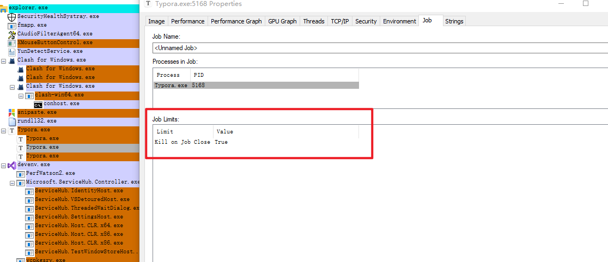
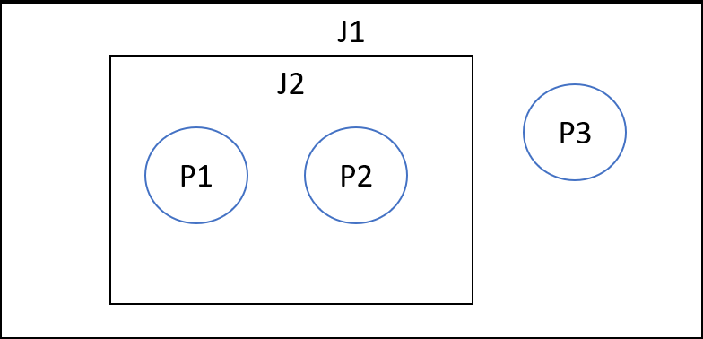

Chapter 4: Jobs
Job objects : being able to manage one or more processes --> around limiting the managed processes
On Windows 7 and earlier, a process can be a member of a single job only, while in Windows 8 and later, a process can be associated with multiple jobs. 多对一变多对多。
about jobs
可以在Process Explorer 的 Options / Configure Colors标记jobs颜色为棕色。
jobs中的进程会受到一些限制：

creating jobs
HANDLE CreateJobObject(
_In_opt_ LPSECURITY_ATTRIBUTES pJobAttributes,
_In_opt_ LPCTSTR pName // object name
);
pName: if a name is provided, and a job with that name exists, then (barring security restrictions), another handle to the existing job is returned
HANDLE OpenJobObject(
_In_ DWORD dwDesiredAccess, // access mask
_In_ BOOL bInheritHandle,
_In_ PCTSTR pName
);
dwDesiredAccess : This access mask is checked against the security descriptor of the job object。returning success only if the security descriptor includes entries that allow the requested permissions。
常用的access mask：
JOB_OBJECT_QUERY (4) 查询权限
JOB_OBJECT_ASSIGN_PROCESS (1) 向job增加进程权限
JOB_OBJECT_SET_ATTRIBUTES (0x10)
JOB_OBJECT_ALL_ACCESS 所有权限
向job增加进程：
AssignProcessToJobObject(
_In_ HANDLE hJob,
_In_ HANDLE hProcess);
对job的权限要求： access mask存在 JOB_OBJECT_ASSIGN_PROCESS
对被加入的process的要求: PROCESS_SET_QUOTA 和 PROCESS_TERMINATE access mask bits
bool AddProcessToJob(HANDLE hJob, DWORD pid) {
HANDLE hProcess = ::OpenProcess(PROCESS_SET_QUOTA | PROCESS_TERMINATE, FALSE, pid);
if (!hProcess)
return false;
BOOL success = ::AssignProcessToJobObject(hJob, hProcess);
::CloseHandle(hProcess);
return success ? true : false;
}
对于jobs内的进程创建的子进程一般都还属于job。break out的情况：
- job has the limit flag JOB_OBJECT_LIMIT_SILENT_BREAKAWAY_OK.
- CreateProcess call includes the CREATE_BREAKAWAY_FROM_JOB flag AND job allows breaking out of it ( JOB_OBJECT_LIMIT_BREAKAWAY_OK )
Nested Jobs
Windows 8 introduced the ability to associate a process with more than one job.
The second job becomes a child of the first job
rules:
A limit imposed by a parent job affects the job and all child jobs
Any limit imposed by a parent job cannot be removed by a child job, but it can be more strict

Querying Job Information
使用QueryInformationJobObject查询job object的基本信息。
要求有job句柄有JOB_QUERY权限。
BOOL QueryInformationJobObject(
_In_opt_ HANDLE hJob,
_In_ JOBOBJECTINFOCLASS JobObjectInfoClass,
_Out_ LPVOID pJobObjectInfo,
_In_ DWORD cbJobObjectInfoLength,
_Out_opt_ LPDWORD pReturnLength
);
handle可以为NULL， 会返回当前调用这个API进程的job。如果job是嵌套的，则查询当前最接近的job。
JOBOBJECTINFOCLASS：可以查询到的各种信息类型的枚举。对不同的信息类型，需要在pJobObjectInfo指向的缓冲区中留出足够的内存。
cbJobObjectInfoLength：pJobObjectInfo指向buffer的字节数。
pReturnLength：返回的信息buffer的length。
jobObjectInfoClass举例：
Information class Information structure type Description
BasicAccountingInformation JOBOBJECT_BASIC_ACCOUNTING_INFORMATION Basic accounting
Job Accounting Information
job中会存在一些固有的信息，如basic accounting information。
可以使用JobObjectBasicAccountingInformation Class来返回JOBOBJECT_BASIC_ACCOUNTING_INFORMATION。
typedef struct _JOBOBJECT_BASIC_ACCOUNTING_INFORMATION {
LARGE_INTEGER TotalUserTime; // total user mode CPU time
LARGE_INTEGER TotalKernelTime; // total kernel mode CPU time
LARGE_INTEGER ThisPeriodTotalUserTime; // same counters as above
LARGE_INTEGER ThisPeriodTotalKernelTime; // for a "period"
DWORD TotalPageFaultCount; // page fault count
DWORD TotalProcesses; // total processes ever existed in the job
DWORD ActiveProcesses; // live processes in the job
DWORD TotalTerminatedProcesses; // processes terminated because of limit violation
}JOBOBJECT_BASIC_ACCOUNTING_INFORMATION, *PJOBOBJECT_BASIC_ACCOUNTING_INFORMATION;
LARGE_INTEGER: 64-bit value
demo:
// assume hJob is a job handle
JOBOBJECT_BASIC_ACCOUNTING_INFORMATION info;
BOOL success = QueryInformationJobObject(hJob, JobObjectBasicAccountingInformation, &info, sizeof(info), nullptr);
Project: https://github.com/zodiacon/Win10SysProgBookSamples/tree/master/Chapter04/JobMon , 一个job管理工具。
Api: TerminateJobObject , 终止job中的所有进程， 但还是可以向job增加process。
BOOL TerminateJobObject(
_In_ HANDLE hJob,
_In_ UINT uExitCode);
Querying for Job Process List
返回job中存活的process列表。使用 JobObjectBasicProcessIdList CLASS。返回JOBOBJECT_BASIC_PROCESS_ID_LIST
typedef struct _JOBOBJECT_BASIC_PROCESS_ID_LIST {
DWORD NumberOfAssignedProcesses;
DWORD NumberOfProcessIdsInList;
ULONG_PTR ProcessIdList[1]; // 无符号long型指针,64 bit
} JOBOBJECT_BASIC_PROCESS_ID_LIST, *PJOBOBJECT_BASIC_PROCESS_ID_LIST;
demo code: 写循环获得一个合适的buffer大小，
#include <vector>
#include <memory>
std::vector<DWORD> GetJobProcessList(HANDLE hJob) {
auto size = 256;
std::vector<DWORD> pids; // vector
while (true) {
auto buffer = std::make_unique<BYTE[]>(size); // buffer，使用make_unique申请的内存会自动释放。
auto ok = ::QueryInformationJobObject(hJob, JobObjectBasicProcessIdList, buffer.get(), size, nullptr);
if (!ok && ::GetLastError() == ERROR_MORE_DATA) { // ERROR_MORE_DATA
// buffer too small - resize and try again
size *= 2;
continue;
}
if (!ok) break;
auto info = reinterpret_cast<JOBOBJECT_BASIC_PROCESS_ID_LIST*>(buffer.get());
pids.reserve(info->NumberOfAssignedProcesses); // 重新分配内存
for (DWORD i = 0; i < info->NumberOfAssignedProcesses; i++)
pids.push_back((DWORD)info->ProcessIdList[i]);
break;
}
return pids;
}
Setting Job Limits
使用SetInformationJobObject：通过JobobjectInfoClass设置limits
BOOL SetInformationJobObject(
_In_ HANDLE hJob,
_In_ JOBOBJECTINFOCLASS JobObjectInfoClass,
_In_ PVOID pJobObjectInfo,
_In_ DWORD cbJobObjectInfoLength
);
需要对handle的句柄有JOB_OBJECT_SET_ATTRIBUTES权限。
可以设置的limits的job class和对应的结构体：
BasicLimitInformation --- JOBOBJECT_BASIC_LIMIT_INFORMATION --- Basic limits
JobObjectExtendedLimitInformation --- JOBOBJECT_EXTENDED_LIMIT_INFORMATION (扩展)
typedef struct _JOBOBJECT_BASIC_LIMIT_INFORMATION {
LARGE_INTEGER PerProcessUserTimeLimit;
LARGE_INTEGER PerJobUserTimeLimit;
DWORD LimitFlags;
SIZE_T MinimumWorkingSetSize;
SIZE_T MaximumWorkingSetSize;
DWORD ActiveProcessLimit;
ULONG_PTR Affinity;
DWORD PriorityClass;
DWORD SchedulingClass;
} JOBOBJECT_BASIC_LIMIT_INFORMATION, *PJOBOBJECT_BASIC_LIMIT_INFORMATION;
typedef struct _JOBOBJECT_EXTENDED_LIMIT_INFORMATION {
JOBOBJECT_BASIC_LIMIT_INFORMATION BasicLimitInformation;
IO_COUNTERS IoInfo;
SIZE_T ProcessMemoryLimit;
SIZE_T JobMemoryLimit;
SIZE_T PeakProcessMemoryUsed;
SIZE_T PeakJobMemoryUsed;
} JOBOBJECT_EXTENDED_LIMIT_INFORMATION, *PJOBOBJECT_EXTENDED_LIMIT_INFORMATION;
可以通过设置jobobject_basic_limit_information的limitflags来设置limits: 一些limits：
BREAKAWAY_OK (0x800) 允许进程break out job: CreateProcess的时候设置CREATE_BREAKAWAY_FROM_JOB
SILENT_BREAKAWAY_OK (0x1000) 默认job中创建的子进程的breakout的。
KILL_ON_JOB_CLOSE (0x2000) 在job的最后一个句柄终止后终止job内所有的process
扩展的JOBOBJECT_EXTENDED_LIMIT_INFORMATION结构体的limit flags也会扩展。
Demo code: 设置PriorityClass属性。
bool SetJobPriorityClass(HANDLE hJob) {
JOBOBJECT_BASIC_LIMIT_INFORMATION info;
info.LimitFlags = JOB_OBJECT_LIMIT_PRIORITY_CLASS;
info.PriorityClass = BELOW_NORMAL_PRIORITY_CLASS;
return ::SetInformationJobObject(hJob, JobObjectBasicLimitInformation, &info, sizeof(info));
}